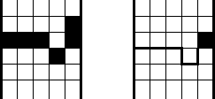

Now that the wicked is punished, there is still work to do. For example, the ground needs to seal itself up. (Otherwise, good people will accidentally fall into Hell, which is not good.)
The ground swallowed Don Giovanni by collapsing: Part of the ground collapsed--fell off to Hell--and this created a gap that swallowed Don Giovanni. The only way the ground can be fixed is by sliding landmasses to close up the gap. Here is an example. The left diagram shows the ground with a ravine. Assume that the ground extends infinitely to the north and to the south, and there are seams on the east and west ends; so the northern block can slide southward, and the southern block can slide northward. The right diagram shows the gap closed.

Write a program to determine if the gap can be closed. The ground is a grid with rows (a row runs east-west) and columns (a column runs north-south). Holes are cells on the grid, and the gap consists of holes.
The first line contains the number of columns W of the ground to be considered. Then W lines follow, specifying the boundary of the gap by columns: a line represents a column, and the order of the lines follows the east-to-west order. Each line contains , the north-most row of the gap in this column, and , the south-most row of the gap in this column. Row numbers are integers between -100 and 100 inclusive.
The input specifies a valid gap: the holes separate the ground into exactly a northern block and a southern block. There are no holes embedded inside a block. There are no islands.
Note:The sample input below corresponds to the first diagram.
Output the line
yesif the gap can be closed by sliding blocks north and south; and
nootherwise.
1 5 2 1 0 -1 1 0 1 0 2 1
yes